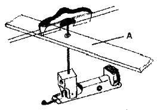
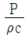
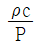
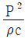
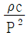
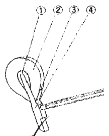

피아노조율산업기사 (2007-05-13 기출문제)
1과목: 임의 구분
1. 현이 갖추어야 할 조건이 아닌 것은?
- 단면이 진원일 것
- 탄력성과 굴곡성이 좋을 것
- 단선위가 낮을 것
- 직경이 균일할 것
(정답률: 알수없음)

2. 피아노 24번 선의 지름(mm)과 인장강도(N/mm2)를 각각 옳게 나타낸 것은?
- 1.225 + 0.015, 2160 ~ 2320
- 1.300 + 0.015, 2110 ~ 2290
- 1.400 + 0.015, 2060 ~ 2250
- 1.500 + 0.015, 1960 ~ 2200
(정답률: 알수없음)
3. 힛치핀과 장브리지시이에 보조 브리지를 넣어서 배음의 울림을 얻게 하는 장치는?
- 링 브리지
- 커트 브리지
- 서스펜딩 브리지
- 아리콧트 브리지
(정답률: 알수없음)
4. 피아노의 튜닝핀 구조 중 핀이 박히는 부분에는 원칙적으로 몇 mm의 나사산을 가공하여야 하는가?
- 20 ~ 25
- 30 ~ 35
- 40 ~ 45
- 50 ~ 55
(정답률: 알수없음)
5. 브리지(bridge)에 대한 설명으로 옳지 않은 것은?
- 현의 진동을 향판에 전하는 역할과 베어링 작용을 한다.
- 브리지는 향판면에 확실히 접착되어 있어야 한다.
- 브리지핀은 현이 브리지에 밀착될 수 있도록 경사져 있어야 한다.
- 브리지 재질은 비중이적은 스프루스를 사용한다.
(정답률: 알수없음)
6. 피아노 건반의 하강하중(N)을 옳게 나타낸 것은?
- 0.098 ~ 0.39
- 0.39 ~ 0.74
- 0.80 ~ 1.20
- 1.30 ~ 1.80
(정답률: 알수없음)
7. 소프트 페달에 관한 설명 중 옳지 않은 것은?
- 그랜드는 이 페달을 밟으면 건반과 액숀 전체가 오른쪽으로 이동하여 타현 개수가 달라진다.
- 그랜드는 이 페달을 밟으면 음색의 변화를 일으킨다.
- 업라이트는 타현 위치기 변경되고 타현 거리가 멀어지므로 음량보다 음색을 줄이는 효과가 있다.
- 그랜드와 업라이트의 소프트 페달은 음색과 음량의 차이가 있다.
(정답률: 알수없음)
8. 다음 그림은 피아노 댐퍼의 일부분이다. A의 명칭은 무엇인가?

- 댐퍼스톱레일
- 댐퍼가이드레일
- 댐퍼블록레일
- 댐퍼레버센터레일
(정답률: 알수없음)
9. 한국산업규격에서 정하는 피아노선 2종(PW-2)의 적용 선지름(mm)을 옳게 나타낸 것은?
- 0.08 이상 7.00 이하
- 0.08 이상 10.0 이하
- 1.00 이상 6.00 이하
- 1.00 이상 10.0 이하
(정답률: 알수없음)
10. 피아노선을 인장시험할 때 선지름이 1.00m 미만인 선은 물림 간격을 약 몇 mm 로 하여야 하는가?
- 100
- 200
- 300
- 400
(정답률: 알수없음)
11. 순정율에서 음정비율을 옳게 나타낸 것은?
- 단3도 – 4:5
- 장3도 – 5:6
- 단6도 – 5:8
- 장10도 – 3:5
(정답률: 알수없음)
12. C28의 제7배음에 해당되는 건반명은?
- G#60
- A61
- A#62
- B63
(정답률: 알수없음)
13. 평균율에서 최저음 A1 음이 27.5Hz 일 경우 10센트 낮게 조율되었다면 실제적으로 약 몇 Hz 인가?
- 26.346
- 26.925
- 27.346
- 27.925
(정답률: 알수없음)
14. 평균율에서 A37 음이 220Hz 일 경우 2센트 높게 조율되었다면 실제적으로 약 몇 Hz 인가?
- 219.96
- 220.06
- 220.16
- 220.26
(정답률: 알수없음)
15. D#31 음이 155.56Hz 이고 G#36 음이 207.65Hz 일 때 두 음간의 맥놀이수는 약 얼마인가?
- 0.29
- 0.35
- 0.52
- 0.71
(정답률: 알수없음)
16. 다음 중 음정비율을 잘못 나타낸 것은?
- 완전8도 – 5:7
- 완전5도 – 2:3
- 완전4도 – 3:4
- 완전1도 – 1:1
(정답률: 알수없음)
17. 건반 C28음과 F33음 간의 4도 맥놀이수(beat)는 약 얼마인가? (단, C28의 진동수는 130.813 Hz이고, F33의 진동수는 174.614 Hz 이다.)
- 0.40
- 0.59
- 1.20
- 1.99
(정답률: 알수없음)
18. 완전음정이나 장음정이 반음 넓어진 상태의 음정을 말하며 이 음정이 동시에 울리면 다른 소리가 나는데 이와 같은 특징과 관계있는 음정은?
- 감음정
- 증음정
- 단음정
- 불완전음정
(정답률: 알수없음)
19. 평균율 단3도와 단6도는 순정율에 비해서 각각 몇 센트씩 차이가 나는가?
- 단3도는 14센트 좁고, 단6도는 16센트 좁다.
- 단3도는 16센트 좁고, 단6도는 14센트 좁다.
- 단3도는 16센트 좁고, 단6도는 16센트 좁다.
- 단3도는 2센트 좁고, 단6도는 6센트 좁다.
(정답률: 알수없음)
20. 평균율에서 A37과 A#38 과의 진동수 차가 얼마인가? (단, A37 음의 진동수는 220Hz 이다.)
- 1.23
- 12.34
- 13.08
- 31.08
(정답률: 알수없음)
2과목: 임의 구분
21. 음속이 340m/s 이고 주파수가 440Hz 일 때 파장은 약 몇 cm 인가?
- 0.77
- 1.29
- 77.27
- 129
(정답률: 알수없음)
22. 음압실효치를 P, 매질의 밀도를 ρ, 음속을 c라고 할 때 소리의 세기를 나타내는 식은?




(정답률: 알수없음)
23. 기저막이 소리의 크기 및 주파수를 분별한 후, 어떠한 신호로 바꾸어 청각 신경계통을 거쳐 뇌에 전달되는가?
- 골격신호
- 전기적인 신호
- 증폭녹음과 진동신호
- 기압조정신호
(정답률: 알수없음)
24. 해머헤드 정음밥업 중 중고음부의 소리를 조금 강하게 하기 위하여 경화제를 투여하는 것을 무엇이라 하는가?
- 파일링
- 도우핑
- 니들링
- 보이싱
(정답률: 알수없음)
25. 다음 중 어울림 음정이 아닌 것은?
- 단3도
- 완전5도
- 단6도
- 단2도
(정답률: 알수없음)
26. 현의 주파수에 관한 설명 중 틀린 것은?
- 주파수는 현의 길이에 반비례한다.
- 주파수는 현 밀도의 제곱근에 비례한다.
- 주파수는 현 장력의 제곱근에 비례한다.
- 주파수는 현의 지름에 반비례한다.
(정답률: 알수없음)
27. 다음 중 불협화 음정에 속하는 것은?
- 완전4도
- 장3도
- 장2도
- 단6도
(정답률: 알수없음)
28. 높이가 다른 2개 이상의 음이 동시에 울리는 상태, 즉 높낮이의 동시적 배합을 무엇이라 하는가?
- 리듬
- 하모니
- 멜로디
- 음률
(정답률: 알수없음)
29. 다음 정음작업에 대한 설명 중 가장 적합하지 않은 방법은?
- 소리가 약할 때는 해머 전체에 밀도제를 투여한다.
- 쇠소리가 날 때에는 바늘로 해머의 어깨 부분을 수회 찌른다.
- 파일링 할 때는 층을 지게 해서는 안된다.
- 타현점으로 갈수록 니들링의 깊이를 조금씩 줄여가는 것이 좋다.
(정답률: 알수없음)
30. SPL(Sound Pressuer Level)은 무엇을 의미하는가?
- 소리의 세기
- 음압 수준
- 소리의 맵시
- 가청 레벌
(정답률: 알수없음)
31. 소리의 음폐효과(masking effect)에 대한 설명 중 옳지 않은 것은?
- 트럼펫 음은 거의 비슷한 높이의 클라리넷 음을 쉽게 음폐시킨다.
- 튜바 음은 피콜로 음을 쉽게 음폐시킨다.
- 음폐효과를 이용하여 소음을 음악으로 음폐시킬 수 있다.
- BGM(back ground music)도 일종의 음폐효과를 이용한 것이다.
(정답률: 알수없음)
32. 일반적으로 인간이 가장 쉽게 감지할 수 있는 Beat는 몇 cycle 정도인가?
- 6
- 20
- 26
- 40
(정답률: 알수없음)
33. 소리의 근원은 보이질 않으나 들을 수 있는 것은 소리의 어떤 특성 때문인가?
- 공명
- 회절
- 간섭
- 분산
(정답률: 알수없음)
34. 순음일 경우 음압 진폭(P)을 나타내는 식으로 옳은 것은?
- P = √2 × 음압 실효치
- P = √3 × 음압 실효치
- P = (√2 × 음압 실효치)2
- P = (√3 × 음압 실효치)2
(정답률: 알수없음)
35. 다음 중 6배음은 원음에 대하여 어떻게 구성되는 음인가?
- 2옥타브 + 장7도
- 2옥타브 + 장3도
- 2옥타브 + 완전5도
- 2옥타브 + 단7도
(정답률: 알수없음)
36. 소리의 간섭에 대한 설명 중 옳은 것은?
- 여러 개의 음파가 동시에 전파될 때 서로 다른 역위상으로 합쳐지는 점의 진폭은 증가한다.
- 간섭이란 두 개 이상의 음파가 중첩하여 진폭을 변화시키는 현상을 말한다.
- 여러 개의 음파가 동시에 전파될 때 동일한 위상으로 합쳐지는 점의 진폭은 감소한다.
- 음의 간섭현상과 맥놀이(beats)현상은 연관성이 없다.
(정답률: 알수없음)
37. 반향에 대한 설명 중 옳지 않은 것은?>
- 음파나 진동이 그 소리의 파장보다 더 넓은 벽면에 부딪치면 그 소리는 반향된다.
- 반향은 음악당을 설계하는데에도 적용된다.
- 호이겐스의 원리로서 설명된다.
- 반향은 그 음파가 통과해야 하는 매체의 변화에 의해서만 생기며, 전달방향이 바뀌는 것을 말한다.
(정답률: 알수없음)
38. 다음 중 음압(音壓)레벨의 단위는?
- nm
- Hz
- dB
- cd
(정답률: 알수없음)
39. 해머 침질시 주의해야 할 사항 중 옳지 않은 것은?
- 해당 부위를 고르게 찔러준다.
- 해머우드를 향하여 방사형으로 찌르는 것이 좋다.
- 한 곳에 집중해서 찌르지 않도록 한다.
- 굵은 바늘로 찔러서 빨리 마무리 한다.
(정답률: 알수없음)
40. 기본 진동수의 정수배의 진동수를 갖는 상음을 무엇이라고 하는가?
- 배음
- 소음
- 정음
- 기저음
(정답률: 알수없음)
3과목: 임의 구분
41. 잭 상하 조정 작업에 설명 중 틀린 것은?
- 신품 피아노의 경우 잭 상단은 레퍼티션레버 상면보다 0.1~0.2mm 정도 낮게 조정한다.
- 오래 사용한 피아노의 경우 잭이 레버 상면보다 조금 높을 수 있다.
- 레퍼티션레버 상하 조정나사는 오른쪽으로 돌리면 잭이 내려간다.
- 약간 낮게 조정할 때는 눈보다는 손으로 만지는 것이 정확할 수도 있다.
(정답률: 알수없음)
42. 건반 바란스핀 홀의 좌우 흔들림은 어느 정도로 조정하는 것이 가장 적당한가?
- 빡빡한 상태로 조정한다.
- 좌우 흔들림이 0.1~0.2mm로 조정한다.
- 좌우 흔들림이 0.5~0.7mm로 조정한다.
- 좌우 흔들림이 1mm 이상으로 조정한다.
(정답률: 알수없음)
43. 레큘레이팅 스크류(Regylating Screw)를 조정하는 주된 목적은?
- 해머 스톱을 조절하기 위해서
- 해머 접근거리를 조절하기 위해서
- 해머의 운동을 원활하게 하기 위해서
- 해머의 진행을 위해서
(정답률: 알수없음)
44. 밸런스레일 스터드의 주된 여갈에 대하여 가장 옳게 나타낸 것은?
- 흑건의 높이를 조절하는 역할을 한다.
- 밸런스레일과 프론트레일을 안정시켜 선명한 터치를 만드는 역할을 한다.
- 건반의 상, 하 운동을 원활하게 하는 역할을 한다.
- 소스테누토 페달의 동작을 원활하게 하는 역할을 한다.
(정답률: 알수없음)
45. 그랜드피아노의 소프트페달 조정에 관한 설명 중 옳은 것은?
- 페달 작동에는 반드시 로스트 모숀이 필요하다.
- 우측으로 너무 많이 진행할 경우 스톱나사를 풀어서 조정한다.
- 소프트페달은 건반과 액숀이 5~6mm 정도 오른쪽으로 이동하는 페달이다.
- 소프트페달과 소스테누토 페달은 같은 작용을 하는 페달이다.
(정답률: 알수없음)
46. 해머접근 거리(Let off)가 3mm일 때 드롭(Drop) 거리는 현에서 측정했을 때 몇 mm 되는가?
- 3
- 6
- 9
- 12
(정답률: 알수없음)
47. 피아노에서 흑건 윗면의 폭은 몇 mm 정도인가?
- 7.0 ~ 8.5
- 9.0 ~ 10.5
- 11.0 ~ 12.5
- 13.0 ~ 14.5
(정답률: 알수없음)
48. 다음 그림 중 해머 톱 펠트(hammer top felt)에 해당하는 것은?

- ①
- ②
- ③
- ④
(정답률: 알수없음)
49. 애프터 터치에 대한 설명 중 옳은 것은?
- 해머접근이나 해머드롭을 통틀어서 애프터 터치라고 한다.
- 강한 타현 후 건반에 되돌아오는 손의 감각을 애프터 터치라고 한다.
- 건반을 눌렀을 때 전체적인 감각을 통틀어 애프터 터치라고 한다.
- 해머가 렛오프된 상태에서 조금 더 내려가는 상태를 애프터 터치라고 한다.
(정답률: 알수없음)
50. 프론트 홀에 붙이는 크로스는 홀 안쪽 부분에 몇 mm 정도가 되도록 붙어야 하는가?
- 3
- 6
- 9
- 12
(정답률: 알수없음)
51. 그랜드 피아노의 해머접근에 관한 설명 중 옳은 것은?
- 해머접근은 저음, 중음, 고음 모두를 같은 거리로 조정해야 한다.
- 가급적 피아노 액션이 부착된 상태에서 조정하는 것이 좋다.
- 해머접근은 레퍼티션레버 스클를 돌려서 조정한다.
- 해머접근은 해머드롭을 조정한 다음에 실시해야 한다.
(정답률: 알수없음)
52. 그랜드 피아노의 댐퍼페달 조정은 어떻게 하는 것이 가장 바람직한가?
- 댐퍼레버와 리프팅 레일사이는 간격이 없는 것이 좋다.
- 댐퍼레버와 리프팅 레일사이는 0.1mm 이상의 간격이 필요하다.
- 댐퍼레버와 리프팅 레일사이는 0.8mm 이상의 간격이 필요하다.
- 댐퍼레버와 리프팅 레일사이는 1.5mm 이상의 간격이 필요하다.
(정답률: 알수없음)
53. 그랜드 피아노의 해머싱크 플랜지가 불량할 경우 수리방법 중 옳지 않은 것은?
- 플랜지가 뻑뻑할 경우 부싱 크로스를 조금 넓혀준다.
- 플랜지가 뻑뻑할 경우 센터핀을 번호가 한 단계 가는 것으로 교환한다.
- 플랜지가 헐거울 경우 센터핀을 번호가 한 단계 굵은 것으로 교환한다.
- 플랜지가 뻑뻑할 경우 부싱에 실리콘을 칠하고 열을 가해준다.
(정답률: 알수없음)
54. 건반 프론트 부싱크로스를 교환할 때 크로스는 어느 정도로 절단해야 하는가?
- 폭 3mm, 길이 300mm
- 폭 5mm, 길이 350mm
- 폭 10mm, 길이 400mm
- 폭 15mm, 길이 600mm
(정답률: 알수없음)
55. 튜닝핀이 헐거워 굵은 핀으로 교체하려고 할 때 기존 튜닝핀보다 어느 정도 더 굵은 것이 가장 적당한가?
- 0.15 ~ 0.25mm
- 0.26 ~ 0.35mm
- 0.36 ~ 0.45mm
- 0.46 ~ 0.60mm
(정답률: 알수없음)
56. 튜닝핀 교환시 너무 빡빡하게 들어가 핀을 돌릴 때에 소리가 나며 원호라한 회전이 되지 않아 조율이 어려울 때 가장 적당한 수리 방법은?
- 핀에 미지근한 물을 칠한다.
- 핀에 백물을 칠한다.
- 핀에 WD-40유를 칠한다.
- 핀에 왁스를 칠한다.
(정답률: 알수없음)
57. 피아노의 현 전체를 교환하려고 할 때 현의 해체 방법으로 가장 바람직한 것은?
- 오른쪽 끝부터 차례로 핀을 1/2 회전씩 돌려서 푼다.
- 프레샤바를 떼고 중음부에서 차례로 푼다.
- 오른쪽 끝부터 핀을 하나씩 건너 1/4 회전씩 돌려서 푼다.
- 왼쪽 끝부터 차례로 핀을 1/2 회전씩 돌려서 푼다.
(정답률: 알수없음)
58. 그랜드피아노에 있어서 댐퍼 레버에 로스트 모션을 두는 주된 이유는?
- 댐퍼 지음을 잘 되게 하기 위해서
- 건반 무게를 가볍게 하기 위해서
- 건반 무게를 무겁게 하기 위해서
- 건반 작동을 원활히 하기 위해서
(정답률: 알수없음)
59. 그랜드피아노의 소스테누토 페달의 주된 역할은?
- 연주시 음색을 변경시킬 때 사용하는 페달이다.
- 연주시 음량을 증가시킬 때 사용하는 페달이다.
- 건반을 쳐서 아무런 효과가 없게 하는 역할을 한다.
- 연주시 어느 특정 음을 지속시켜 주는 역할을 한다.
(정답률: 알수없음)
60. 그랜드피아노에서 연속적 타현을 하도록 하는 장치는?
- 잭스톱
- 레퍼티션레버
- 스톱레일
- 댐퍼레버
(정답률: 알수없음)